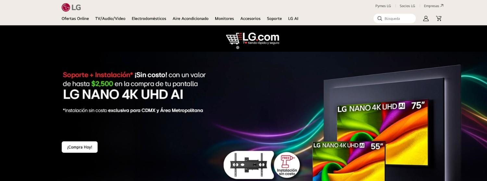
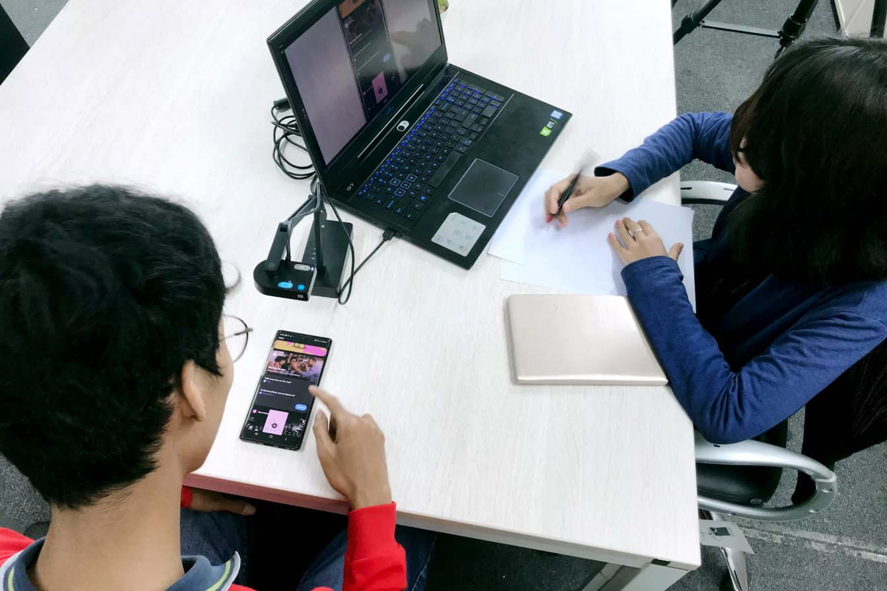

Albus (Jungmin) Kim
Hi, I’m Albus, a program manager who turns manual processes into scalable, AI-powered workflows.
About
I started my career co-founding an Apple accessory brand while still in university, designing products, sourcing factories, and answering every customer message myself. Today, I work at Concentrix, providing global website management for LG Electronics (one of our biggest B2B clients). In addition to building scalable systems, I spend a lot of my work time getting product, engineering, regional, and vendor teams to move in the same direction.
Some of my most notable projects are below. Each project below has its own page: the people involved, what I did, and why I made the decisions I made.
Some of my best program management experiences
Most recent role first


Halving LG's global translation spend
Cut annual website translation cost from USD 1.2M to USD 600K by restructuring the vendor pool around AI translation.

Taking over LG's second-largest region
27 websites, 21 countries and 8 languages, a role previously held only by senior managers.

From a prototype to LG's official launch process
Built a launch dashboard prototype without engineers. LG built it into its product information platform and made it the process for 3,000+ launches a month worldwide.

Automating global GA/SEO reporting
Reporting lead time from 3 days to under 6 hours, adopted as LG's global reporting format.


Running the Korea study for a USD 5M program
Led the Korea market portion of a USD 5M worldwide face-authentication user study and was promoted mid-project.
 neXT
neXTBuilding an iPhone accessory brand from zero
Co-founded a direct-to-consumer brand at university, where one original case design carried the business in a category that usually competes on price.